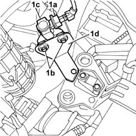
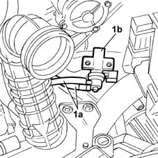

1064A28 SOLENOID VALVE FOR TURBOCHARGER VANE ACTUATOR - R.R.
- Path
- Procedures > 10 ENGINE UNIT > 1064 ENGINE TURBOCHARGING SYSTEM > 1064A turbo charger assembly > 1064A28 SOLENOID VALVE FOR TURBOCHARGER VANE ACTUATOR - R.R.
- Kind
- repair procedure (removal / refitting; the operation number is the code)
- Applies to
- engines: 1.9 JTD 8V; all production periods
- Interactive page
- https://sloeber94.github.io/elrnDB-fMltpl/en/#/2891426
Applies to: engines: 1.9 JTD 8V; all production periods; only with equipment: Euro 3
 Removing
Removing
 Refitting
RefittingOpen the bonnet lid.
1048A10 AIR CLEANER FILTERING ELEMENT - REPLACE
1. Disconnect the connector (1a) and undo the two bolts (1b) fixing the solenoid valve (1c) to the mounting bracket (1d).
 | Name | Connector |
|---|---|---|
1a | Variable geometry turbine solenoid valve |

Applies to: engines: 1.9 JTD 8V; all production periods; only with equipment: Euro 3
1. Mark the pipes (1a) underneath to facilitate refitting, then disconnect them and remove the valve (1b).

Applies to: engines: 1.9 JTD 8V; all production periods; only with equipment: Euro 3
Refitting
RemovingConnect the pipes at the bottom of the valve.
Position the solenoid valve and tighten the two bolts fixing it to the mounting bracket.
Connect the electrical connection.
| Name | Connector |
|---|---|---|
- | Variable geometry turbine solenoid valve |
1048A10 AIR CLEANER FILTERING ELEMENT - REPLACE
Close the bonnet lid.